10 主成分分析
主成分分析 (principal component analysis, PCA) は, 互いに相関のある多数の変数を, 情報の損失をできるだけ小さくしながら, 互いに無相関な少数の合成変数 (主成分) に集約する手法である. 第1主成分は, 変数の線形結合のうち分散が最大となるもの, 第2主成分は, 第1主成分と無相関なもののうち分散が最大となるもの, … と順に定められる. 主成分の係数を主成分負荷量, 各個体の主成分の値を主成分得点と呼ぶ.
R では, 標準パッケージの関数princomp()とprcomp()で実行できる.
princomp(): 分散を n で割って計算する. 引数cor = TRUEで相関行列に対する PCAprcomp(): 不偏分散 (n − 1 で割る) を使う. 引数scale. = TRUEで相関行列に対する PCA (各変数を標準化してから PCA). 計算精度の点で, こちらが推奨される
本章の内容は, 授業の R 演習スクリプト R_pca_dist.R に対応する.
10.1 分散共分散行列か, 相関行列か: USArrests
データ1: USArrests (R の組み込みデータ)
USArrests: n = 50, p = 4
- 全米50州 (1973年) の, 人口10万人当たりの凶悪犯罪の逮捕者数
(Murder: 殺人, Assault: 暴行, Rape: 強姦), 及び都市部の人口割合 (UrbanPop, %)変数の散らばりの大きさ (スケール) の違いが PCA の結果にどう影響するかを理解するのに適したデータである.
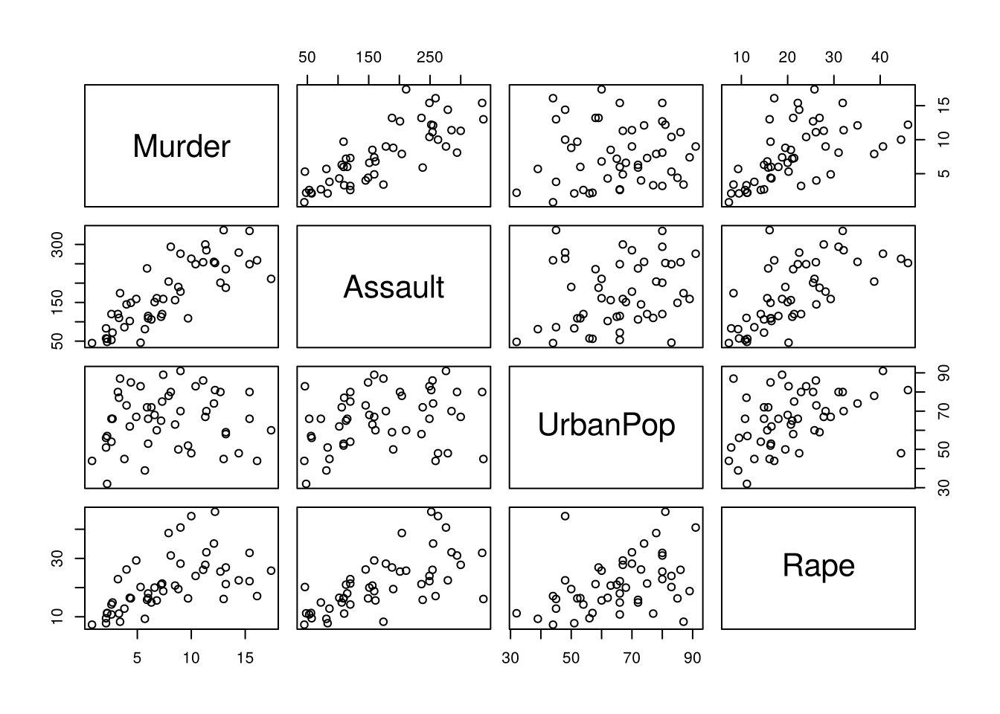
summary(USArrests)
#> Murder Assault UrbanPop Rape
#> Min. : 0.800 Min. : 45.0 Min. :32.00 Min. : 7.30
#> 1st Qu.: 4.075 1st Qu.:109.0 1st Qu.:54.50 1st Qu.:15.07
#> Median : 7.250 Median :159.0 Median :66.00 Median :20.10
#> Mean : 7.788 Mean :170.8 Mean :65.54 Mean :21.23
#> 3rd Qu.:11.250 3rd Qu.:249.0 3rd Qu.:77.75 3rd Qu.:26.18
#> Max. :17.400 Max. :337.0 Max. :91.00 Max. :46.00
round(apply(USArrests, 2, sd), 1) # 変数によって散らばりの大きさが大きく異なる
#> Murder Assault UrbanPop Rape
#> 4.4 83.3 14.5 9.4Assault の標準偏差は, 他の変数より一桁以上大きい.
自主課題: 以下の2つのやり方のどちらが良いか考えてみよう.
# どちらが良いか?
(pc_cr3 <- prcomp(USArrests)) # 分散共分散行列に対する PCA (標準化しない)
#> Standard deviations (1, .., p=4):
#> [1] 83.732400 14.212402 6.489426 2.482790
#>
#> Rotation (n x k) = (4 x 4):
#> PC1 PC2 PC3 PC4
#> Murder 0.04170432 -0.04482166 0.07989066 -0.99492173
#> Assault 0.99522128 -0.05876003 -0.06756974 0.03893830
#> UrbanPop 0.04633575 0.97685748 -0.20054629 -0.05816914
#> Rape 0.07515550 0.20071807 0.97408059 0.07232502
(pc_cr4 <- prcomp(USArrests, scale. = TRUE)) # 相関行列に対する PCA (各変数を標準化)
#> Standard deviations (1, .., p=4):
#> [1] 1.5748783 0.9948694 0.5971291 0.4164494
#>
#> Rotation (n x k) = (4 x 4):
#> PC1 PC2 PC3 PC4
#> Murder -0.5358995 -0.4181809 0.3412327 0.64922780
#> Assault -0.5831836 -0.1879856 0.2681484 -0.74340748
#> UrbanPop -0.2781909 0.8728062 0.3780158 0.13387773
#> Rape -0.5434321 0.1673186 -0.8177779 0.08902432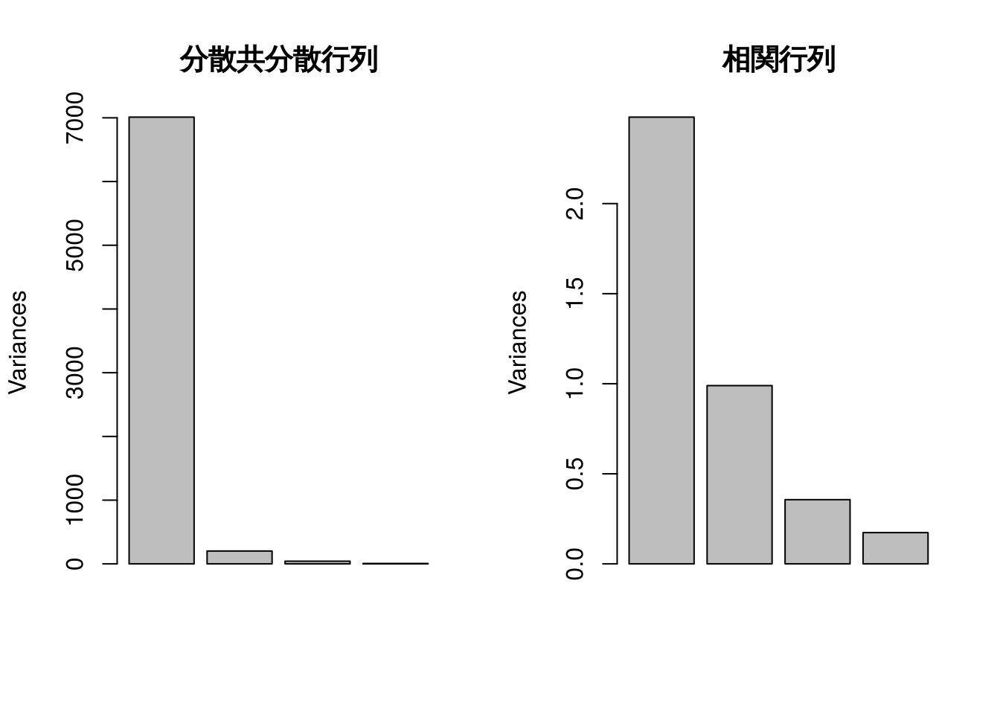
par(mfrow = c(1, 1))
summary(pc_cr3)
#> Importance of components:
#> PC1 PC2 PC3 PC4
#> Standard deviation 83.7324 14.21240 6.4894 2.48279
#> Proportion of Variance 0.9655 0.02782 0.0058 0.00085
#> Cumulative Proportion 0.9655 0.99335 0.9991 1.00000
summary(pc_cr4)
#> Importance of components:
#> PC1 PC2 PC3 PC4
#> Standard deviation 1.5749 0.9949 0.59713 0.41645
#> Proportion of Variance 0.6201 0.2474 0.08914 0.04336
#> Cumulative Proportion 0.6201 0.8675 0.95664 1.00000分散共分散行列に対する PCA では, 第1主成分の負荷量はほぼ Assault だけで決まり, 第1主成分だけで全変動の97%を説明する.
これは, 4つの変数の関係を捉えた結果ではなく, 単に Assault の分散が大きいことを反映しているに過ぎない.
一方, 相関行列に対する PCA (各変数を標準化) では, 第1主成分は3種類の犯罪の逮捕者数にほぼ同じ大きさの負荷量を持ち (「凶悪犯罪の多さ」. ここでは負荷量の符号が負なので, 得点が小さいほど凶悪犯罪が多い), 第2主成分は主に UrbanPop (「都市化の程度」) を表している.
単位や散らばりの大きさが異なる変数を扱う場合は, 各変数を標準化する (相関行列に対する PCA を行う) のが基本である. 逆に, 全ての変数の単位がそろっていて, 散らばりの大きさの違い自体に意味がある場合 (例えば, 同じ満点の評価項目) は, 分散共分散行列に対する PCA を使って良い.
10.2 基本操作: 従業員評価データ
データ2: 従業員評価データ (仮想データ)
testdat_jap.csv (英語版: testdat_eng.csv): n = 9人, p = 5 (仮想データ)
- 各従業員の5項目 (専門性, 分析力, リーダーシップ, プレゼン力, コミュ力) を100点満点で評価スライド「主成分分析 (2)」の実行例と同じデータである.
1行目は説明の行なので skip = 1 で読み飛ばし, 1列目の氏名を行名に使う (row.names = 1).
文字化けする場合には, 英語版 testdat_eng.csv を使っても良い.
tokuten <- read.csv("class/testdat_jap.csv", header = TRUE, row.names = 1, skip = 1)
tokuten
#> 専門性 分析力 リーダーシップ プレゼン力 コミュ力
#> 山田 80 87 70 65 67
#> 鈴木 85 83 65 68 63
#> 田中 75 70 80 79 75
#> 中村 70 72 85 83 79
#> 大野 88 85 85 90 91
#> 松井 75 78 79 85 80
#> 高木 80 80 75 75 80
#> 三浦 83 72 85 80 83
#> 佐藤 69 82 77 70 80
pairs(tokuten)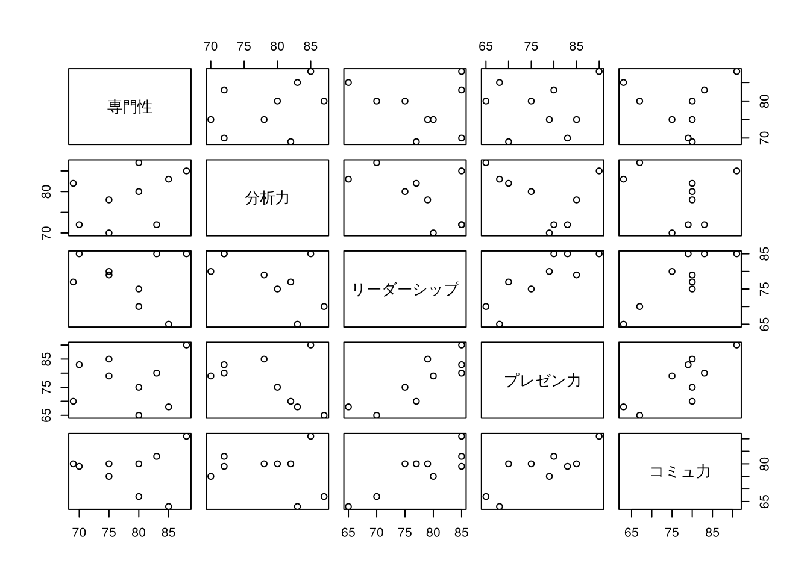
PCA の実行
5項目とも同じ100点満点の尺度なので, 分散共分散行列に対する PCA (princomp() のデフォルト) を使う.
tokuten_pc <- princomp(tokuten)
summary(tokuten_pc) # 寄与率, 累積寄与率
#> Importance of components:
#> Comp.1 Comp.2 Comp.3 Comp.4 Comp.5
#> Standard deviation 12.4807420 7.1424787 4.73037885 2.9724343 1.57269337
#> Proportion of Variance 0.6477709 0.2121478 0.09305346 0.0367422 0.01028558
#> Cumulative Proportion 0.6477709 0.8599188 0.95297222 0.9897144 1.00000000
plot(tokuten_pc) # スクリープロット (主成分の分散の棒グラフ)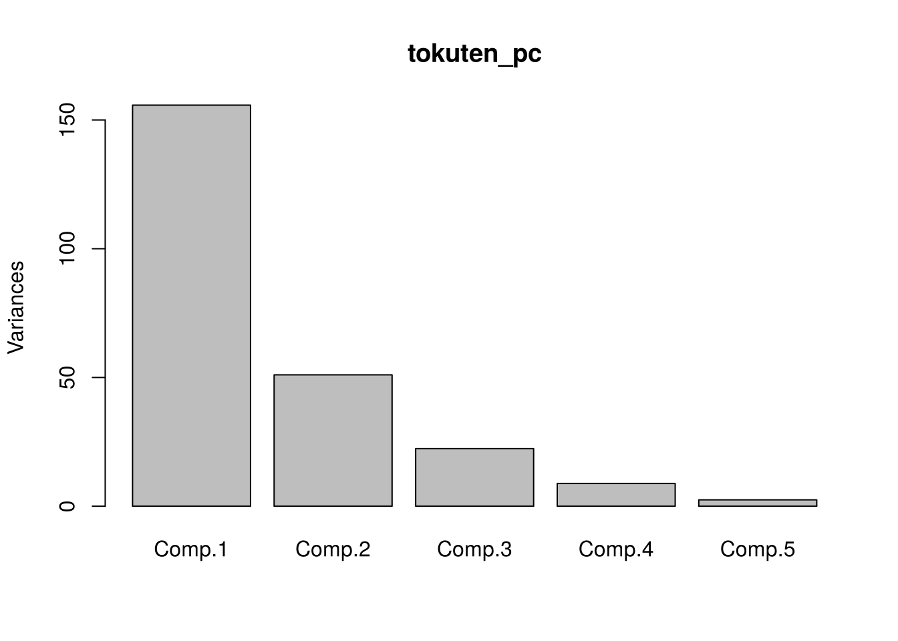
主成分負荷量
tokuten_pc$loadings # 絶対値 0.1 未満は空欄で表示される
#>
#> Loadings:
#> Comp.1 Comp.2 Comp.3 Comp.4 Comp.5
#> 専門性 0.775 0.536 0.332
#> 分析力 0.227 0.554 -0.634 -0.325 0.366
#> リーダーシップ -0.510 -0.137 0.323 0.786
#> プレゼン力 -0.591 0.153 0.275 -0.741
#> コミュ力 -0.582 0.223 -0.486 0.362 -0.496
#>
#> Comp.1 Comp.2 Comp.3 Comp.4 Comp.5
#> SS loadings 1.0 1.0 1.0 1.0 1.0
#> Proportion Var 0.2 0.2 0.2 0.2 0.2
#> Cumulative Var 0.2 0.4 0.6 0.8 1.0
# t(tokuten_pc$loadings) %*% tokuten_pc$loadings # 直交性の確認 (単位行列)
# 軸だけ描く (文字が切れないよう描画範囲を広げる)
plot(tokuten_pc$loadings[, 1:2], type = "n", xlim = c(-0.75, 0.35), ylim = c(-0.2,
0.9))
text(tokuten_pc$loadings[, 1:2], colnames(tokuten))
abline(h = 0, v = 0, lty = 3)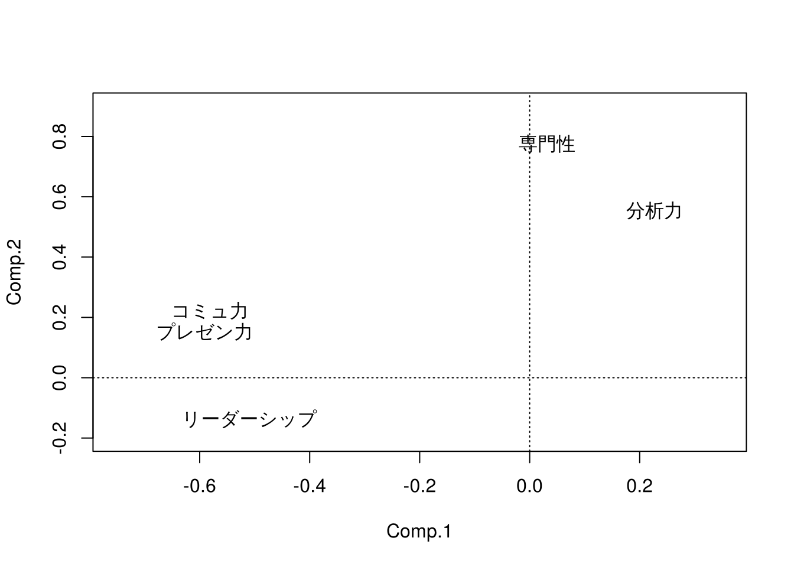
自主課題: 第1主成分, 第2主成分は, それぞれどのような意味に解釈できるか? (ヒント: 負荷量の符号と大きさに注目する)
主成分得点
tokuten_pc$scores
#> Comp.1 Comp.2 Comp.3 Comp.4 Comp.5
#> 山田 19.304343 2.7048291 -2.4411238 0.5754498 2.6750248
#> 鈴木 21.655520 4.6155395 5.6073003 -1.7490457 -0.7368287
#> 田中 -2.739766 -8.0346039 5.4765050 0.1887216 -0.4687677
#> 中村 -9.682974 -9.9826824 0.6190434 -2.0247358 1.8769769
#> 大野 -17.277425 14.9224986 -1.8787424 -1.1322419 0.8666327
#> 松井 -6.867523 -1.4328205 -0.3577567 -5.3750278 -1.0885751
#> 高木 1.694979 2.5684468 -1.6399325 1.7537323 -2.8802837
#> 三浦 -9.824535 0.5291295 4.8161616 5.9565572 0.4056066
#> 佐藤 3.737381 -5.8903368 -10.2014547 1.8065903 -0.6497859
plot(tokuten_pc$scores[, 1:2], type = "n")
text(tokuten_pc$scores[, 1:2], rownames(tokuten))
abline(h = 0, v = 0, lty = 3)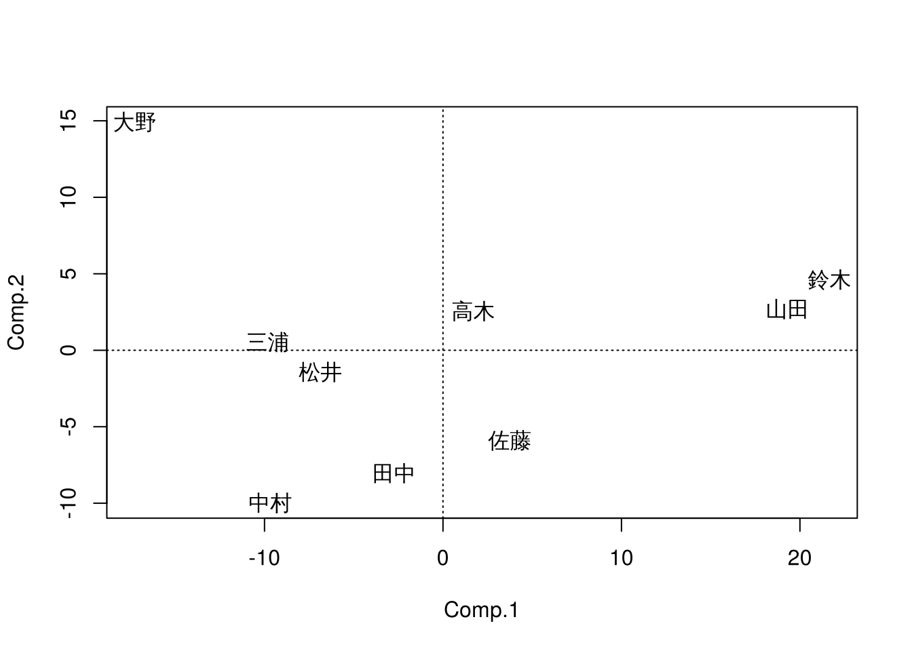
バイプロット
主成分得点 (個体) と主成分負荷量 (変数) を同時にプロットする. 合成変数 (主成分) を縦横軸に取った平面上に, 各従業員の主成分得点を散布すると共に, 元の変数を矢印 (ベクトル) で表現したものである.
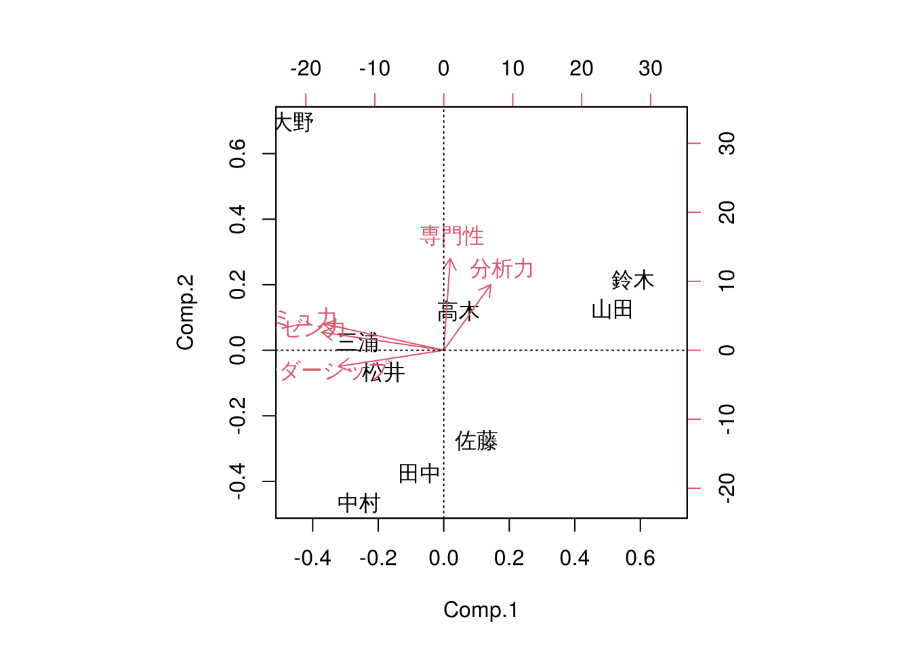
自主課題: バイプロットから, 各従業員の特徴を読み取ってみよう.
元の変数の散布図との比較
評価項目のペアごとの散布図を描き, 主成分得点の散布図と見比べてみよう.
par(mfrow = c(1, 2))
plot(tokuten[, c(1, 2)], type = "n")
text(tokuten[, c(1, 2)], rownames(tokuten))
plot(tokuten[, c(3, 5)], type = "n")
text(tokuten[, c(3, 5)], rownames(tokuten))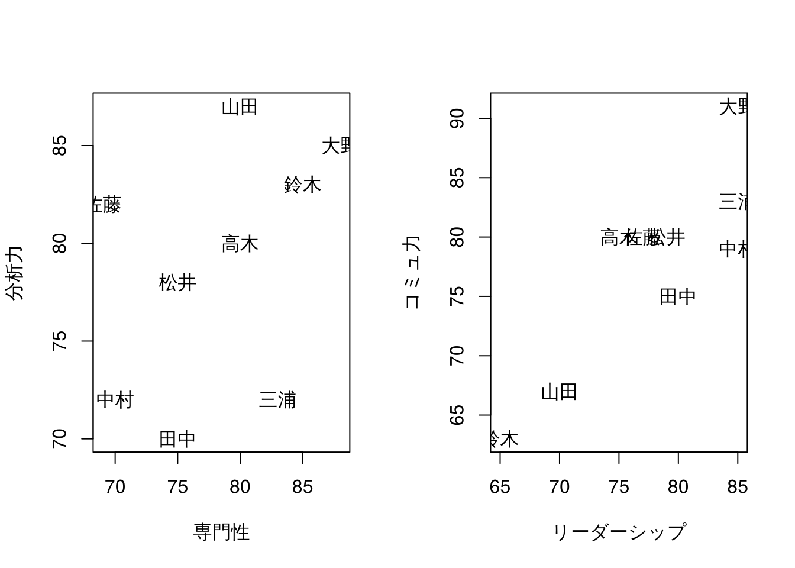
代替的な関数: prcomp()
tokuten_prcomp <- prcomp(tokuten)
summary(tokuten_prcomp)
#> Importance of components:
#> PC1 PC2 PC3 PC4 PC5
#> Standard deviation 13.2378 7.5757 5.01732 3.15274 1.66809
#> Proportion of Variance 0.6478 0.2122 0.09305 0.03674 0.01029
#> Cumulative Proportion 0.6478 0.8599 0.95297 0.98971 1.00000
tokuten_prcomp$rotation # 主成分負荷量
#> PC1 PC2 PC3 PC4 PC5
#> 専門性 -0.03162775 0.7753770 0.53571555 0.3316583 -0.02831625
#> 分析力 -0.22710092 0.5541994 -0.63357070 -0.3251925 -0.36623249
#> リーダーシップ 0.50974398 -0.1365068 -0.01367592 0.3227645 -0.78559724
#> プレゼン力 0.59111858 0.1530044 0.27483158 -0.7411911 0.04766342
#> コミュ力 0.58151936 0.2227311 -0.48567230 0.3615403 0.49561793
tokuten_prcomp$x # 主成分得点
#> PC1 PC2 PC3 PC4 PC5
#> 山田 -19.304343 2.7048291 -2.4411238 0.5754498 -2.6750248
#> 鈴木 -21.655520 4.6155395 5.6073003 -1.7490457 0.7368287
#> 田中 2.739766 -8.0346039 5.4765050 0.1887216 0.4687677
#> 中村 9.682974 -9.9826824 0.6190434 -2.0247358 -1.8769769
#> 大野 17.277425 14.9224986 -1.8787424 -1.1322419 -0.8666327
#> 松井 6.867523 -1.4328205 -0.3577567 -5.3750278 1.0885751
#> 高木 -1.694979 2.5684468 -1.6399325 1.7537323 2.8802837
#> 三浦 9.824535 0.5291295 4.8161616 5.9565572 -0.4056066
#> 佐藤 -3.737381 -5.8903368 -10.2014547 1.8065903 0.6497859
biplot(tokuten_prcomp)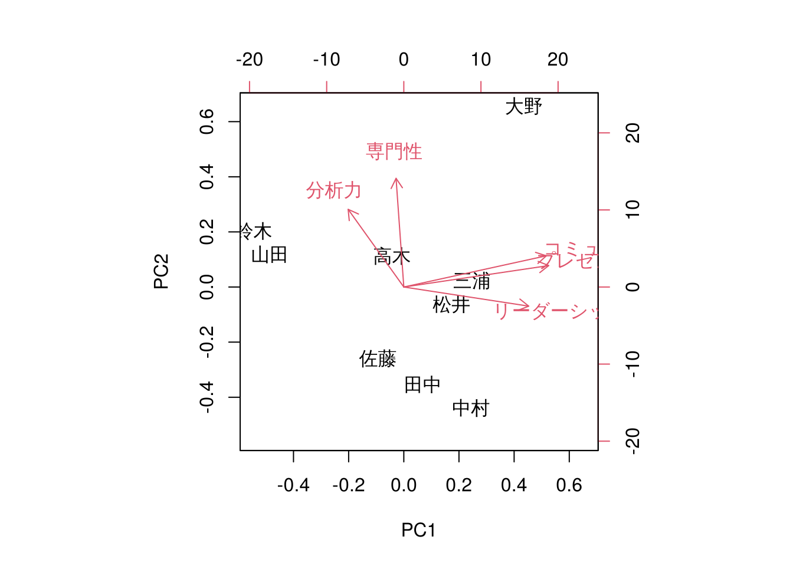
princomp() と prcomp() では, 主成分負荷量・主成分得点の符号が逆になっている主成分がある.
主成分の符号は一意に定まらない (負荷量ベクトルの向きを反転させても, 分散や他の主成分との無相関性は変わらない) ので, 解釈しやすい向きに読み替えて良い.
また, prcomp() は不偏分散を使うので, 主成分の標準偏差の値も少し異なる (寄与率は同じ).
10.3 標準化するか, しないか: 従業員評価データ2
データ3: 従業員評価データ2 (仮想データ)
employee_scores_raw.csv: n = 100人, p = 10 (仮想データ). 1列目は従業員ID
- JobPerf: 業務成果 (上司評価), TechSkill: 技術スキル (テストスコア),
CommSkill: 対人コミュニケーションスキル (360度評価), TeamScore: チームワーク貢献度,
LeadPot: リーダーシップの将来性評価 (上司評価), JobSat: 仕事満足度,
WLBal: ワークライフバランス満足度, TrainHrs: 自己啓発に費やす時間 (月間, 時間),
OTHrs: 残業時間 (月間, 時間), RetLik: 定着意向 (値が高いほど離職の可能性が低い)
employee_scores.csv: 同じデータの各項目を, 平均50, 標準偏差10 に換算した偏差値形式のデータemployee_scores_raw.csv は元の単位のデータで, 時間で測った項目と点数の項目が混在している.
emp_raw <- read.csv("class/employee_scores_raw.csv")
emp_raw <- emp_raw[, -1] # 第1列 (ID) を除去
summary(emp_raw)
#> JobPerf TechSkill CommSkill TeamScore
#> Min. :51.00 Min. :42.00 Min. :38.00 Min. : 53.00
#> 1st Qu.:64.00 1st Qu.:60.00 1st Qu.:55.00 1st Qu.: 69.00
#> Median :70.00 Median :66.00 Median :59.00 Median : 75.00
#> Mean :70.04 Mean :64.77 Mean :59.61 Mean : 74.54
#> 3rd Qu.:76.00 3rd Qu.:70.00 3rd Qu.:65.00 3rd Qu.: 80.00
#> Max. :92.00 Max. :84.00 Max. :76.00 Max. :101.00
#> LeadPot JobSat WLBal TrainHrs
#> Min. :25.00 Min. :51.00 Min. :35.00 Min. : 0.00
#> 1st Qu.:43.00 1st Qu.:64.75 1st Qu.:57.75 1st Qu.: 4.00
#> Median :49.00 Median :70.00 Median :63.00 Median : 5.00
#> Mean :48.24 Mean :69.42 Mean :63.50 Mean : 5.09
#> 3rd Qu.:53.25 3rd Qu.:74.00 3rd Qu.:69.00 3rd Qu.: 6.00
#> Max. :69.00 Max. :86.00 Max. :98.00 Max. :11.00
#> OTHrs RetLik
#> Min. : 5.00 Min. : 56.00
#> 1st Qu.:17.75 1st Qu.: 73.00
#> Median :21.00 Median : 80.00
#> Mean :20.71 Mean : 79.50
#> 3rd Qu.:25.00 3rd Qu.: 86.25
#> Max. :32.00 Max. :111.00
round(apply(emp_raw, 2, sd), 1) # 項目によって散らばりの大きさが大きく異なる
#> JobPerf TechSkill CommSkill TeamScore LeadPot JobSat WLBal TrainHrs
#> 8.4 8.1 7.5 9.7 9.0 7.2 9.9 2.0
#> OTHrs RetLik
#> 5.0 10.4分散共分散行列に対する PCA (標準化しない)
emp_pc_cov <- prcomp(emp_raw)
summary(emp_pc_cov)
#> Importance of components:
#> PC1 PC2 PC3 PC4 PC5 PC6 PC7
#> Standard deviation 17.0059 11.4904 7.52855 6.96157 6.08481 5.65875 4.90989
#> Proportion of Variance 0.4431 0.2023 0.08685 0.07426 0.05673 0.04907 0.03694
#> Cumulative Proportion 0.4431 0.6454 0.73229 0.80655 0.86328 0.91235 0.94929
#> PC8 PC9 PC10
#> Standard deviation 4.36478 3.3894 1.59898
#> Proportion of Variance 0.02919 0.0176 0.00392
#> Cumulative Proportion 0.97848 0.9961 1.00000
round(emp_pc_cov$rotation[, 1:2], 2)
#> PC1 PC2
#> JobPerf 0.29 0.34
#> TechSkill 0.33 0.26
#> CommSkill 0.32 0.24
#> TeamScore 0.42 0.31
#> LeadPot 0.36 0.23
#> JobSat 0.28 -0.23
#> WLBal 0.39 -0.50
#> TrainHrs 0.06 0.03
#> OTHrs -0.08 0.24
#> RetLik 0.39 -0.50USArrests と同様に, 散らばりの大きい項目が第1主成分を支配し, 時間で測った項目 (TrainHrs, OTHrs) はほとんど寄与しない.
相関行列に対する PCA (各項目を標準化)
emp_pc <- prcomp(emp_raw, scale. = TRUE)
summary(emp_pc) # 寄与率, 累積寄与率
#> Importance of components:
#> PC1 PC2 PC3 PC4 PC5 PC6 PC7
#> Standard deviation 2.0264 1.4079 0.86921 0.84465 0.76267 0.68903 0.6738
#> Proportion of Variance 0.4106 0.1982 0.07555 0.07134 0.05817 0.04748 0.0454
#> Cumulative Proportion 0.4106 0.6088 0.68438 0.75573 0.81389 0.86137 0.9068
#> PC8 PC9 PC10
#> Standard deviation 0.61489 0.53673 0.51589
#> Proportion of Variance 0.03781 0.02881 0.02661
#> Cumulative Proportion 0.94458 0.97339 1.00000
screeplot(emp_pc, type = "lines", main = "スクリープロット (相関行列)")
abline(h = 1, lty = 2) # 固有値 1 の目安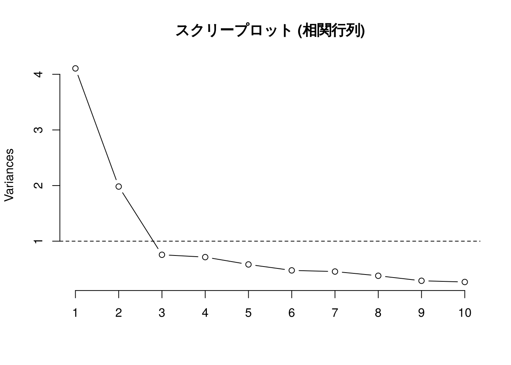
emp_pc$sdev^2 # 固有値
#> [1] 4.1062412 1.9820768 0.7555210 0.7134379 0.5816633 0.4747671 0.4539754
#> [8] 0.3780872 0.2880827 0.2661474
round(emp_pc$rotation[, 1:3], 2) # 主成分負荷量
#> PC1 PC2 PC3
#> JobPerf 0.31 0.24 0.53
#> TechSkill 0.36 0.22 0.03
#> CommSkill 0.37 0.23 -0.02
#> TeamScore 0.36 0.21 -0.14
#> LeadPot 0.35 0.15 0.07
#> JobSat 0.33 -0.37 0.08
#> WLBal 0.31 -0.44 -0.02
#> TrainHrs 0.30 0.17 -0.14
#> OTHrs -0.12 0.57 -0.48
#> RetLik 0.27 -0.31 -0.66相関行列に対する PCA では, 主成分の分散 (= 相関行列の固有値) が1を超える主成分を採用するという目安 (カイザー基準) がよく使われる. 標準化した変数1つ分の分散が1なので, 「元の変数1つ分より多くの情報を持つ主成分」を残すという考え方である. このデータでは, 固有値が1を超える主成分は2個である.
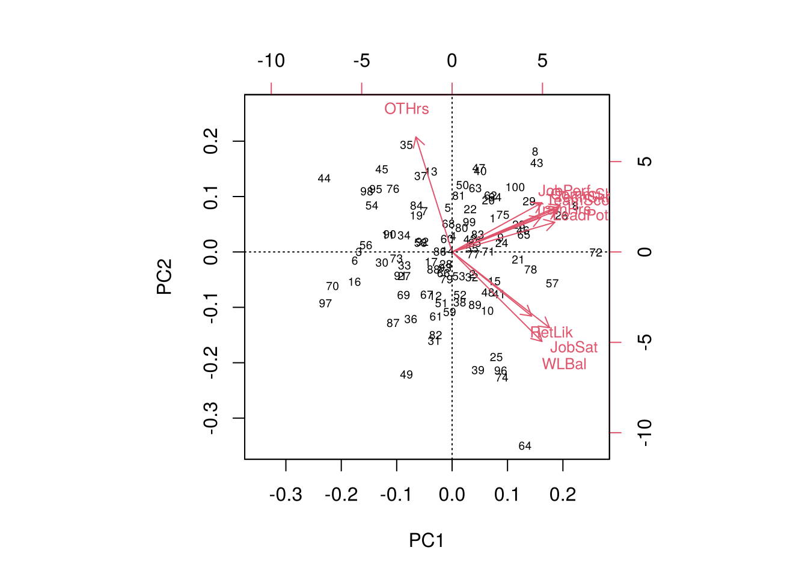
自主課題:
- 第1主成分, 第2主成分にどのような名前を付けられるか?
- 単位の異なる項目を含むデータでは, なぜ標準化が必要か?
偏差値形式のデータ (employee_scores.csv) は, 各項目の標準偏差がそろっているので, これを分散共分散行列に対する PCA にかけると, 標準化した結果とほぼ同じになる.